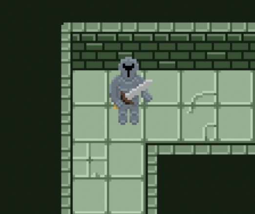

FPGA · Verilog · Computer Architecture
Procedural Maze Game on Custom Processor
A dungeon-crawler maze game designed with a partner running on a custom 32-bit pipelined processor implemented on an FPGA.

Abstract
This project involved designing and implementing a custom 32-bit pipelined processor on an FPGA to support an 8x8 tile maze game viewed one tile at a time that randomly generated new maze paths and supported a joystick for movement. At the start of the game, users see a sprite appear in the middle of a tile, and can navigate the sprite off the edges of each tile into neighboring tiles to follow along the maze path. At the end of the maze, a treasure chest appears in the middle of a dead end tile, and an end screen appears once users navigate the sprite over the chest. From this end screen, users can push a button to return to the start screen and can then replay the maze with a new map. While navigating the maze, the player's sprite is animated to match the direction the sprite is traveling and the sprite's movement is limited to the onscreen pathway.
Designed initially in Photoshop, each tile features a stone pathway against a dark green background. The widths and dimensions of each pathway are standardized and line up with the pathways of any other given tile. The tile data is encoded in a five bit message in a designated register detailing which directions-up, down, left, or right-have an exit and whether that tile is an end cell, or maze destination. If a tile is denoted as an “end cell,” a treasure chest appears in the middle of the cell.
After using a start button signal to latch a random seed (16-bit TFF Counter) based on the timing of the user input, the first section of our code procedurally generates a random maze path and stores each tile's data in memory. This code ensures every tile within the 8x8 maze contains valid exit information and is connected to the rest of the maze, that the end of the maze is the furthest it can be from the start of the maze, and that the maze is perfect (contains no loops).
After the maze is generated, players spawn in the middle of the start tile, and can use the joystick to navigate the maze one tile at a time. Adaptive boundaries prevent users from exiting the maze path, allowing movement in each direction only when a valid exit exists in the corresponding direction.
This game is viewed on a VGA screen housed in an acrylic arcade cabinet which supports the button and joystick as user input. Inside the cabinet, an FPGA uploaded with our hardware design and memory is connected to a custom circuit of pull-down networks to interpret the input signals. On the outside of the cabinet, users see a polished black arcade cabinet with stickers and labels to improve aesthetic appeal.
Results
5-Stage
Pipeline with hazard detection
32-bit
Pipelined processor
VGA
Graphics Output
FPGA
Hardware Deployment
System Architecture
The system consists of a custom CPU, instruction memory, data memory, VGA controller, input handling, and game logic written in assembly.
- Five-stage instruction pipeline
- Hazard detection and forwarding
- Memory-mapped graphics interface
- VGA timing and pixel generation

Technical Deep Dive
Processor Pipeline Design
The processor was implemented as a five-stage pipelined architecture consisting of fetch, decode, execute, memory, and writeback stages. Pipeline registers separated each stage to improve throughput and enable simultaneous instruction execution.
To handle data hazards, I implemented forwarding logic and stall detection hardware. Branch hazards were resolved through pipeline flushing and control logic inserted during decode.
Key Features
Hazard detection, forwarding, branch flushing, register file bypassing, and memory-mapped I/O.

Five-stage processor pipeline showing instruction flow, forwarding paths, and hazard handling.

VGA subsystem responsible for timing generation, frame synchronization, and pixel rendering.
Graphics and VGA Output
A custom VGA controller generated synchronization signals and pixel coordinates for a 640×480 display. The game renderer interfaced with memory-mapped graphics hardware to draw tiles and player movement in real time.
Rendering performance was optimized by minimizing memory accesses and simplifying sprite logic to fit FPGA timing and resource constraints.
- 640×480 VGA output
- Real-time tile rendering
- Memory-mapped graphics interface
- Hardware timing synchronization
Photo Gallery


Challenges & Debugging
One major challenge was handling pipeline hazards that caused incorrect game behavior. I debugged the issue using simulation waveforms and resolved it by improving the forwarding and stall logic.
Future Improvements
- Add interrupt support
- Improve graphics performance
- Port the design to a RISC-V style ISA
- Add hardware sprite acceleration